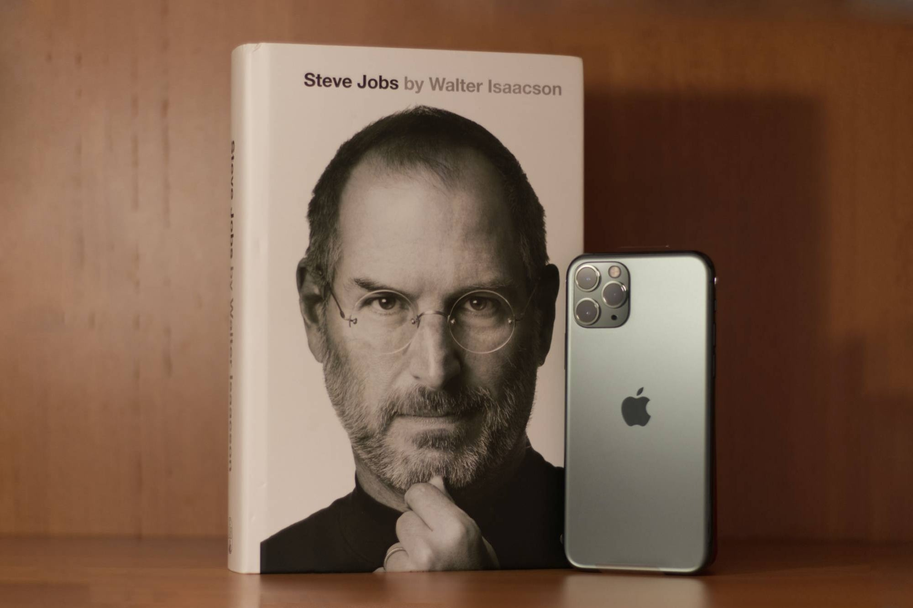
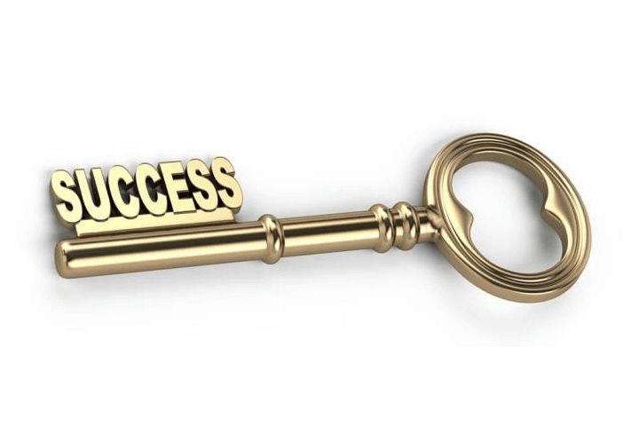

The risk of playing it safe
October 1, 2021 by Donique Forbes

Steve Jobs once said "Have the courage to follow your heart and intuition. They somehow already know what you truly want to become. Everything else is secondary."
The society has convinced us that what's traditional is safe and what's safe is best. Go to a good school, get a good job, start a family, work until you can't, because
what the world thinks is good should be good enough for all of us. We're told that risks are....well, risky and it's not for everyone, play it safe, do what everyone else does.
Yet time and again we see risk takers running the world and making the gains while the safe team stays unfulfilled.
the college graduates can't find jobs and the college dropouts are billionaires.
Where do you stand in a world where the traditional way of living is the traditional
way of dying? "You can fail at what you don't want, so you might as well take a chance on doing what you love. " jim Carrey said. In this world, when
you love what you do, you do it well and nothing beats ajob well done. Life is short, too short to spend 20 plus years becoming qualified to
fulfill someone else's dream. Dream big and live well, because the safest bet is found in the chances you take on yourself.
The Key to Success
October 1, 2021 by Donique Forbes

I was staying at my sister"s house for a while and we lost the house keys.
Neither of us could find it or remember where we put it so we went a few days using the spare.
On Thursday, she left for work with the spare and I was left at home without a key.
I had some heavy assignments due and woke up needing some motivation so I turned on "The Secret" while doing laundry.
Now the hose for the washing machine was at the back door and I could'nt open it without the key and I had to go through the front and walk around to the back door.
At that very moment, on my second trip to the back of the house, I heard the secret still playing "Thoughts become things" Bob Doyle says. In my annoyance at the situation
I think to myself "If I could just manifest finding those keys" not taking it too seriously, i make my way to the back, as i turn the corner I know where the hose should be.
while reaching for it, right there, under a plant pot my sister had, were the house keys. Needless to say I was freaked out, scared but also facinated. I was almost certain
this was some type of magic *cue me looking left and right, "Harry Potter is that you? "*. What blew my mind was how fast it happened, I thought about what I wanted, spoke it
and went on with my day and almost instantly my desire presented itself to me.
I believe more than anything that this is the key to success, because what we think determines what we do and what we do, determines how we live. while our goals may not
unfold so quickly, their achievement is sure once we think it clearly, speak it freely and act whith expectation.
Now you may not be a believer of the secret or the related principles but you have nothing to lose and everything to gain by trying. Our belief is more powerful than we could imagine.
Our thoughts and words can change lives, open doors and make dreams come true. So I have to ask you, "Have you found your key?"